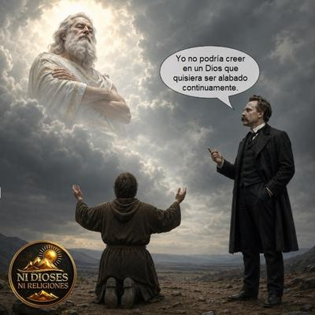

Si tomamos en serio la descripción tradicional del dios abrahámico, y la analizamos desde el punto de vista psicológico, el resultado resulta ser desagradablemente sorprendente. Según la teología cristiana tradicional, «Dios» no sólo desea ser amado, ni se conforma tampoco con ser respetado, sino que exige algo mucho más que eso: adoración. Exige reverencia absoluta, obediencia incondicional, sumisión total, amor exclusivo y un reconocimiento permanente de su grandeza. Y no es que sea sólo una sugerencia suya; tienes que hacerlo, porque tu destino eterno depende precisamente de eso. Así que resulta inevitable preguntar: ¿Cómo es que un ser supuestamente perfecto, omnipotente y autosuficiente necesita algo así?


Visto desde la psicología, esa necesidad constante de admiración es una señal de fragilidad emocional, más que de fortaleza. Porque quien es seguro de sí mismo, no necesita que otros le recuerden continuamente su valor. Quien posee una autoestima sólida, no exige aplausos permanentes, ni se enfurece cuando alguien cuestiona su superioridad. En cambio, el «Dios» de la tradición bíblica, parece comportarse exactamente de una forma que denota inseguridad.
Por otra parte, la psicología ha observado que precisamente uno de los rasgos más llamativos del narcisismo es la dependencia de la validación externa. Es decir, el narcisista necesita que otros lo admiren constantemente, para sostener una imagen grandiosa de sí mismo. Pero paradójicamente, cuanto más exagerada es esa imagen de superioridad, más vulnerable suele ser la autoestima que intenta proteger. Y por eso resulta difícil no preguntarse qué clase de seguridad interior posee un ser que necesita que miles de millones de criaturas repitan sin cesar que él es grande, perfecto, glorioso, maravilloso y digno de alabanza. Si realmente fuera inmensamente perfecto, ¿para qué tendría necesidad de escucharlo una y otra vez? ¿Cómo es que tú puedes creer en un «Dios» así? Como decía el filósofo alemán Friedrich Nietzsche (1844-1900): «Yo no podría creer en un Dios que quisiera ser alabado continuamente.»
Más bien, la insistencia religiosa en esa adoración revela justamente lo contrario de lo que pretende demostrar. Un ser así, en lugar de reflejar autosuficiencia, transmite dependencia. En lugar de proyectar fortaleza emocional, sugiere inseguridad. En lugar de evidenciar plenitud, delata una necesidad permanente de reafirmación. Y desde esta perspectiva, la adoración funciona como un mecanismo de compensación, siendo las alabanzas de los creyentes el combustible psicológico que mantiene en pie su autoimagen de grandeza.
Por tanto, este personaje es también incapaz de tolerar el cuestionamiento, lo cual demuestra a su vez una intolerancia a la frustración. En efecto, en numerosos pasajes bíblicos, este «Dios» no se limita a lamentar la desobediencia humana: se enfurece, castiga, amenaza, y maldice. Destruye ciudades, envía plagas, y condena poblaciones enteras. Y la psicología conoce bien este fenómeno: las personalidades narcisistas suelen interpretar las críticas, la indiferencia o el rechazo, como humillaciones intolerables. Lo que para una persona emocionalmente madura sería una discrepancia normal, para ellas se convierte en una afrenta insoportable. La herida narcisista produce una intensa sensación de vergüenza y humillación, que rápidamente se transforma en ira. La secuencia es conocida: tú no me admiras, no me reconoces, no me obedeces, entonces me has ofendido gravemente. Y viene a continuación el castigo.
Visto desde esta óptica, la ira divina parece menos una expresión de justicia, y más una reacción emocional desproporcionada ante una falta de reconocimiento. Sin embargo, hay otro elemento característico del narcisismo: la máscara de superioridad que oculta una profunda fragilidad. Es decir, esa grandiosidad funciona como una armadura psicológica: cuanto más inseguro se siente el individuo, más necesita proyectar una imagen de perfección, poder y autoridad. Y es por eso que resulta significativo que el «Dios» bíblico insista constantemente en recordar quién manda, quién merece la gloria y quién debe ser obedecido.
Un ser verdaderamente seguro de sí mismo no tendría necesidad de repetir continuamente su estatus, pero el personaje bíblico divino lo hace una y otra vez. Es un ser que exige reconocimiento, fidelidad, amor, obediencia y adoración exclusivos. De modo que la pregunta psicológica es evidente: ¿Qué clase de seguridad necesita tantas confirmaciones?
Ahora bien, hay otro rasgo frecuentemente asociado al narcisismo patológico: la ausencia de empatía, esa dificultad para reconocer las necesidades y sentimientos ajenos. Para esta clase de sujetos, el mundo gira alrededor del ellos. Los demás existen sólo en función de la utilidad que les proporcionan. Y si observamos la relación planteada en buena parte de la teología tradicional, encontramos esta estructura: el creyente debe amar a «Dios», pero debe además temerle, servirle, obedecerle, glorificarlo y adorarlo. Jamás encontramos una relación con algún rasgo de reciprocidad. Toda la atención está centrada en satisfacer las exigencias divinas, las necesidades emocionales de «Dios», ocupando las necesidades emocionales humanas un lugar tan secundario, que al final no importan. La relación nunca se parece a la de un padre amoroso con sus hijos.
Pero existe además una paradoja interesante: a pesar de ser presentado como el ser más poderoso imaginable, este «Dios» aparece también retratado frecuentemente como víctima de la ingratitud humana. Un ser que se lamenta porque no lo escuchan, que se enfada porque no le obedecen, que se siente ofendido porque alguien adora a otros dioses, y que se indigna por no recibir el reconocimiento que considera merecer. Resulta verdaderamente extraño que un ser perfecto se vea tan emocionalmente afectado por la conducta de criaturas tan insignificantes. Desde una perspectiva psicológica, esto recuerda a ciertas personalidades que interpretan cualquier desacuerdo como una falta de consideración personal.
Pero quizá el aspecto más inquietante de todo esto es la estructura relacional que deriva de estas creencias: se trata de una condición donde el creyente debe someterse, humillarse, obedecer, amar, servir y adorar. Y todo ello, bajo la promesa de una recompensa eterna o la amenaza de un castigo eterno. Una relación que no parece basada en el amor, y que se acerca peligrosamente a una dinámica de poder. Tal como observó el exevangelista estadounidense Dan Barker (n. en 1949): Preguntar, «Si Dios no existe, ¿cuál es el sentido de la vida?», se parece mucho a preguntar, «Si no hay amo, ¿de quién seré esclavo?». Y como señalaba el escritor angloestadounidense Christopher Hitchens (1949-2011), resulta sorprendente que tantas personas deseen la existencia de una autoridad absoluta que supervise cada pensamiento, cada acción y cada aspecto de sus vidas.
En conclusión podemos decir, que si el dios abrahámico fuera evaluado psicológicamente, muchos de los rasgos que se le atribuyen levantarían fuertes señales de alarma: su necesidad constante de adoración sugiere dependencia de la validación externa, su intolerancia a la falta de reconocimiento revela una autoestima frágil, su ira ante la desobediencia apunta a una marcada vulnerabilidad narcisista, y su exigencia de sumisión absoluta refleja impulsos autoritarios. Además, su aparente incapacidad para aceptar el desacuerdo sin interpretarlo como una ofensa grave, indica una profunda inseguridad oculta tras una máscara de superioridad. Y todo esto no constituye la descripción de un ser perfecto, sino un retrato burdamente humano: un personaje que proyecta las necesidades emocionales, los temores, las inseguridades y las aspiraciones de poder de quienes lo imaginaron.
Así que quizá la pregunta más reveladora no sea por qué «Dios» exige adoración. Quizá lo verdaderamente interesante sea por qué tantos seres humanos han considerado admirable una figura que la psicología moderna reconocería de inmediato como un caso patológico de dependencia emocional, necesidad de control y búsqueda permanente de validación. Por eso, al final mejor nos quedamos con las palabras de emperador romano Marco Aurelio (121-180): «Vive una buena vida. Si hay dioses y son justos, no les importará cuán devoto has sido, sino que te acogerán basándose en las virtudes con las que has vivido».
[Godless Freeman]
Comentarios
Comments powered by Disqus